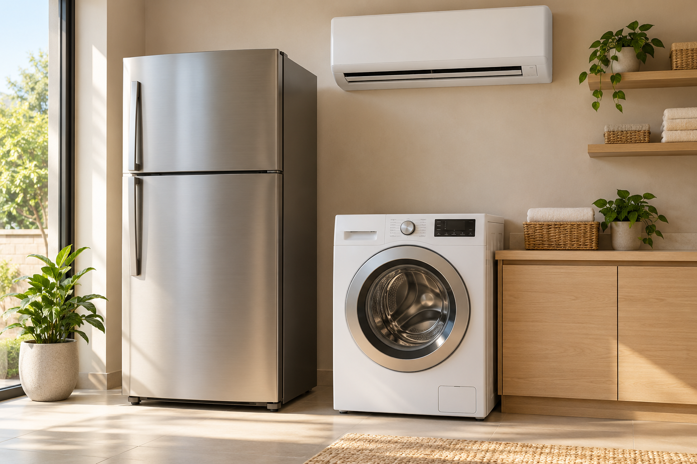

01
Geladeiras
Sua geladeira não está gelando ou apresenta algum problema? Fale com a gente para avaliar o equipamento.
- Manutenção e reparo
- Instalação e orientação de uso
- Venda sob consulta
Manutenção, venda e instalação de geladeiras, máquinas de lavar e ar-condicionado. Conte com a EDUMAQ em Bauru e região.

Do equipamento que parou ao conforto que você quer instalar. Encontre o serviço que precisa.
Sua geladeira não está gelando ou apresenta algum problema? Fale com a gente para avaliar o equipamento.
Lavadora ou lava e seca com falhas? Vamos entender o problema e conversar sobre a solução.
Mais conforto para o seu ambiente, da escolha do aparelho à instalação e manutenção.
Consulte as opções de geladeiras, máquinas de lavar, lava e seca e ar-condicionado. Converse com a EDUMAQ para saber os modelos, valores e condições disponíveis.
Consultar disponibilidade Modelos e disponibilidade confirmados pelo WhatsApp.Somos a EDUMAQ Assistência Técnica. Atendemos Bauru e região com serviços para os equipamentos que fazem parte do seu dia a dia.
Conte o que está acontecendo, tire suas dúvidas e solicite uma avaliação sem compromisso.
Envie uma mensagem com o equipamento, o problema ou o serviço desejado.
Fale com a equipe para confirmar a disponibilidade na sua região e agendar a avaliação gratuita.
Entenda a solução indicada e as condições antes de decidir pelo serviço.
Sim. A EDUMAQ oferece a primeira visita gratuita e orçamento sem compromisso. Entre em contato para combinar o agendamento e confirmar o atendimento no seu endereço.
Atendemos Bauru e região. Informe sua cidade e bairro pelo WhatsApp para consultar a disponibilidade de atendimento.
O atendimento é de segunda a domingo. Os horários e as visitas são combinados diretamente com a equipe, conforme disponibilidade.
Envie uma mensagem informando o equipamento que procura. A equipe confirma os modelos disponíveis, valores e condições de compra. As imagens do site são ilustrativas.
Informe seu nome, cidade, bairro, tipo de equipamento e o serviço desejado. Se souber, inclua a marca, o modelo e uma breve descrição do problema. Fotos podem ser enviadas na conversa pelo WhatsApp.
Preencha os dados e continue pelo WhatsApp. Assim, já começamos a conversa entendendo o que você precisa.
(14) 99181-8212 ↗